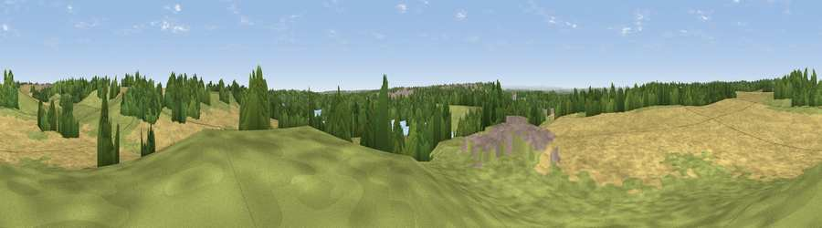

Viewpoint near New Fryston
#27840 in England · top 48% of its area beats it · near New FrystonThe view, rendered

A 360° render of this exact spot computed from the terrain model, tree cover and land cover — summer colours, afternoon light, calibrated against photographs of famous viewpoints. Real trees, hedges and buildings will differ in detail.
The panorama
Grey silhouette: terrain skyline in each direction (720 bearings, Earth curvature and refraction included). Dashed green: skyline with trees (+15 m) and buildings (+8 m) as obstacles. Blue strip: how far the ground is visible on each bearing.
Where the view opens
Wedge length = distance to the farthest visible ground on that bearing (vegetation-aware). Rings at 10, 25 and 50 km.
What fills the view
49% cropland · 25% grassland · 17% woodland · 5% water · 4% built-up
Angular shares of the visible panorama (visual magnitude), not map area. Landscape diversity 0.56 (0–1 Shannon).
Key numbers
More beautiful places nearby
The staircase of upgrades: each row has a higher view potential than everything closer. Driving times are estimates from straight-line distance, calibrated against real road routing — check an actual route before setting out.
| Place | Direction | Drive | Score |
|---|---|---|---|
| Viewpoint near Castleford | SW · 3 km | ~8 min | 52.0 |
| Viewpoint near Micklefield | NNW · 4 km | ~10 min | 65.7 |
| Viewpoint near Woolley | SW · 21 km | ~36 min | 67.9 |
| Viewpoint near Grange Moor | WSW · 26 km | ~42 min | 69.8 |
| Rawdon Billing | WNW · 27 km | ~43 min | 73.0 |
| Viewpoint near Otley | WNW · 30 km | ~47 min | 77.5 |
| Hood Hill | N · 53 km | ~75 min | 79.6 |
| Viewpoint near Thirlby | N · 55 km | ~77 min | 81.5 |
53.74838, -1.30507 · source: screening · position refined by local search. Computed location — check access rights before visiting.